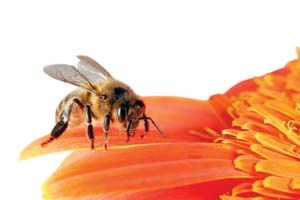
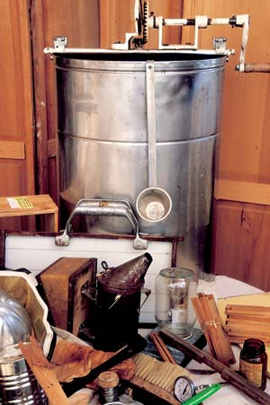
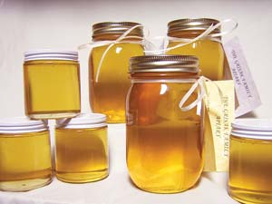
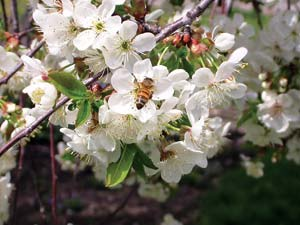
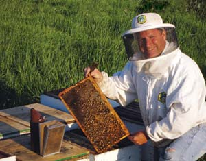
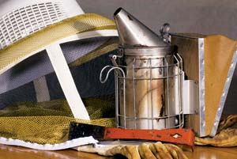

If you’d like to benefit your garden and community and offer a treat to your taste buds, consider keeping a couple of beehives. As honeybees gather pollen and nectar to make 50 pounds or more of pure, wild honey per hive, they pollinate crops nearby - and up to four miles away. This pollination is essential for good yields for some flowering crops. Best of all, honeybees require only simple management once the hives are up and running. Kim Flottum, editor of Bee Culture Magazine, says that managing bees takes “more effort than for your cat, but less than your dog.”
But can you do it naturally? For the first time in 20 years, the answer is yes. Until the mid-1980s, some beekeepers avoided using chemicals inside beehives, but then a quarantine violation led to the importation of the varroa mite, a devastating tick-like honeybee parasite. At about the same time, much tinier terrors called tracheal mites began ravaging hives throughout the country.
To save their bees from these and other pests, many beekeepers turned to chemical controls, which worked for a while. Then two things happened: many populations of varroa mites became resistant to the two main pesticides used to control them, and entomologists discovered that feeding bees fatty patties made of sugar and shortening suppressed tracheal mites to tolerable levels.
In addition, products that utilize the mite-minimizing properties of essential oils (such as thymol-based Api-Life VAR) and spearmint and lemongrass Honey-B-Healthy) can effectively suppress mites in small apiaries. Dusting with powdered sugar is another technique used to knock down mites. Combined with routine hive maintenance and using bees bred to clean out compromised cells, new natural techniques can eliminate the need for chemical controls.
The general rhythm of bee life involves making and storing honey in wax combs from spring to fall, and then feeding on the stored supply in winter. Bees make honey from nectar. First, foraging bees collect nectar from flowers and store this sugary fluid in their “honey stomach.” They transform the nectar into honey by repeatedly passing it back and forth, which helps evaporate most of the water and adds enzymes. Strong hives make more honey than they need, so good beekeeping involves doing everything you can to keep the colony healthy, and taking out just the right amount of honey without depriving the bees of an ample winter supply.
Honeybees reproduce rapidly as the weather warms in summer, so spring is the best time to set up a new hive. As you wait for winter to end, spend some time with a good book on beekeeping (See “Resources,” below). You will be working with highly organized insects, so a working knowledge of bee behavior is helpful - and fascinating. You might look for a local beekeeper to help guide you through your first season. Your local extension service may be able to suggest someone (or offer a beekeeping course), or you can find a beekeeping club at www.beeculture.com.
If you live in the city, also check to make sure local regulations do not prohibit beekeeping. In most areas, beekeeping falls under generalized nuisance laws, and two hives are highly unlikely to become a nuisance. Even so, Dallas-area beekeeper John Caldieri suggests that suburban beekeepers do two things: Install a 6-foot tall panel of privacy fencing near hives to raise the bees’ flight paths above head level as they come and go, and share jars of honey with your closest neighbors.
On your side of the fence, locate hives where the bees will have an open flight path. Ideally, morning sun should warm the hives, which should be in a place where they will seldom be disturbed by human activities. If there is no pond or stream nearby, you will also need to provide a pool, birdbath or tub of water within 40 feet of the hives.
It’s best to pass up all-inclusive pre-built beginner kits that come with a plastic foundation. Bees build better on pure beeswax.
Most beekeepers order pre-cut hive and frame components, which are quick and easy to assemble with glue and nails. You can also build your own hive boxes. Vermont beekeeper Mike Palmer buys scrap wood and makes boxes, bottom boards and lids for about a dollar each. Building plans for boxes and frames are available here.
White is the traditional color to paint the outside of boxes; light colors help keep the hives from overheating in hot summer weather. Use any non-lead-based paint or a natural sealant, such as Auro.
You can buy worker bees (and an egg-laying queen for each hive) by mail. The best time to start beekeeping is after the last hard freeze in the spring, so you’ll want to have them delivered then. As you shop, choose queen bees from regional sources that have been bred for “hygienic behavior” - a genetic trait that leads to workers with superior talents for cleaning out larvae with disease or mites. For each hive, you will need 3 pounds of bees with a queen - that’s about 12,000 bees! The post office will never be more eager to see you come in than on the day when your order arrives.
Once you have some experience, you can add new hives by taking in swarms, or groups of worker bees with an older queen that will leave a mature colony to start a new one. Many people don’t want large swarms of bees to find a new home on their property, so if you’re interested in picking up these “free bees,” just add your name to the local police and fire department lists of beekeepers willing to collect swarms, and before long the phone will ring for “the bee lady” or “the bee guy.” Because swarms have an old queen, most beekeepers replace her with a stronger queen soon after the colony is settled in its new hive.
You will need to look inside the hive from time to time to see what’s going on, sometimes to feed your bees sugar water to supplement lean nectar supplies, and certainly to harvest some honey in late summer. Hiving and feeding your bees can feel complicated and scary at first, so suit up completely in a zipper-sealed bee suit until you feel comfortable and confident (many experienced beekeepers suit up, too). When working with the hives, take your time and practice slow, fluid movements, which are least likely to upset the bees. You will calm the bees by first using a smoker to puff pine-needle or leaf smoke in and around the hives (it masks the bees’ alarm pheromone), but even calm bees will crawl around on their keeper. Fortunately, calm bees seldom sting.
You can harvest your honey with the beeswax comb intact (comb honey), or you can use a hot knife to cut the caps from the comb and remove the honey. Extracting the honey and returning the empty comb to the hive is easiest on the bees (they ingest 6 pounds of honey to make 1 pound of wax). Electric extractors quickly spin the honey from combs using centrifugal force, but they are expensive. Bee clubs often share an electric extractor, and sometimes organize honey harvesting parties.
As frames are replaced, you will harvest more bounty from your bees in the form of beeswax for candles, soaps and lotion. Should you decide to sell some of your honey, you will find that prices are significantly higher for local, raw honey. Some people buy it for health reasons, including to relieve allergies, although proof that it works depends on anecdotal evidence.
It is always wise to set hives up off the ground on bricks or concrete blocks - especially in areas where fire ants or hive beetles may stage an invasion. In addition, many beekeepers like to have a screened bottom board and an access slot in the back of the hive’s bottom box big enough to slip in a thick piece of cardboard. If the bees have varroa mites, you can catch about 15 percent of them by using pieces of paper coated with cooking oil or petroleum jelly (the mites that fall off the bees’ bodies get stuck and can’t crawl back up). The slot also comes in handy should you opt to “fumigate” hives with essential oils or other natural pest-control products.
But the most important component of a healthy beehive is you. It will take little effort on your part to bond with your bees, which begins the day you slip your new caged queen into the hive, dump in her ready workforce of bees, and hope they like her well enough to chew through the sugar plug on her little cage to set her free. Or, you may begin with a smaller “nuc,” or nuclear colony, which consists of a laying queen and the first of her brood. After one week, check new hives to make sure the queen is laying, and then let the bees work in peace. As long as you see bees coming and going from the hive with bulging pouches of pollen on their legs, assume that all is well. The first young bees will begin hatching within a month.
In a hive’s first year, it is best to leave most of the honey for the bees, and harvest only a few frames in late summer. Then, after life in the hive settles down again, you can let the original queen stay on, or you can replace her. Many beekeepers replace their queens every August, because young queens lay more eggs than older ones. If you simply let nature take its course, the workers will raise a new queen when the old one begins to fail, by feeding a special food - royal jelly - to selected larvae.
As fascinating as they are productive, bees bring rewards far beyond honey. As a beekeeper, you get the pleasant respite of working with your hives, and the bees spread their pollinating benefits and put delicious honey on your table.
Beekeeping does involve some initial expenses. Here’s a list of what you will need to start two hives. The cost can be divided into one-time startup expenses for hive components (about $350) and other equipment (about $150). If you get everything new it comes to about $500 for two hives, plus bees and shipping. You can cut costs by starting with swarms instead of purchasing bees. (For more about purchasing bees, see “12,000 Bees Please,” above.) You also can buy some equipment secondhand, although you should not buy used hive and frame components, and especially not used comb, because of the threat of spreading mites and disease. Before you order any equipment, you will need to decide whether you want liquid or comb honey. (See "The Sweetest Harvest," above.)
Two hives, commercial grade: This is a one-time expense of about $200. It includes these parts of the boxes: four hive bodies (boxes); six 6 5/8-inch honey supers (boxes), two reversible bottom boards, two telescoping covers with inner covers, two queen excluders, two top feeders, two screened bottom boards, and two entrance reducers.
Frames and foundations: These will need to be gradually replaced every three years or so, and cost about $150 total. That estimated cost includes commercial frames and foundation sheets. Be sure to get the correct size frames for your supers. Also, if you decide to make liquid honey, you’ll need to order crimp wired foundation sheets. For comb honey, order thin, unwired foundation.
One-time expense, $150 and up:
Zipper veil bee suit and helmet
Boot bands
Gloves, plastic-coated canvas
7-inch stainless steel smoker with shield
Hive tool
Frame grips
Bee brush
Spur embedder for wiring frames
Embedding wire
3 pounds of bees, plus queen, $55 to $80, plus shipping
1 gallon exterior latex paint or Auro natural stain
Outdoor wood glue
Cinder blocks or wood for a base
Betterbee, Greenwich N.Y.; (800) 632-3379
Dadant & Sons, Hamilton Ill.; (888) 922-1293
Mann Lake, Hackensack, Minn.; (800) 880-7694
Western Bee Supplies, Polson, Mont.; (800) 548-8440
GloryBeeFoods, Eugene, Ore.; (800) 456-7923
You also can purchase preassembled frames for 60 cents each from the beekeeper below. To order,
correspond by mail: Rudy Swartzentruber; 271 Johnson Rd, Rensselaer Falls, NY 13680
Honeybees have been in the headlines recently, and the news isn’t good. Many people are now worried about the loss of large numbers of bees, a phenomenon known as Colony Collapse Disorder (CCD). Honeybees play an important role in pollinating many fruits and vegetables, so this news is as alarming for agriculture as it is for beekeeping.
The latest research indicates that a variety of factors are probably responsible for dying honeybees including a virus, problems with mites and other factors that weaken the immunity of the bees. However, we’re also hearing reports that while large commercial beekeeping operations are suffering, many home beekeepers are having fewer problems. For beekeepers, following the suggestions elsewhere in this article, such as avoiding secondhand equipment, and taking other steps to avoid mites, are sensible precautions. For more news on bees and CCD visit click here. - Mother
The Backyard Beekeeper, by Kim Flottum
The Beekeeper’s Handbook, by Diana Sammataro and Alphonse Avitabile
The Hive and the Honey Bee, edited by Joe Graham
A Book of Bees, Sue Hubbell
American Bee Journal
Bee Culture
(Bee clubs often have subscription discount certificates.)
Bee-L, A moderated listserv discussing beekeeping issues and bee biology. Before asking a question on Bee-L, search the extensive archives by subject.
For a list of plants attractive to bees visit here.
For an article explaining how to build your own beehives read the 1999 article on Beekeeping Basics.
|
 ISTOCKPHOTO Honeybees are important pollinators of many flowering plants. The best time to start a new hive is in the spring. |
 JOHN IVANKO In the late summer, it’s time to harvest some of the honey from your hives. |
 AMY GRISAK Looking for local sources of honey? Visit www.localharvest.org and search for “honey,” or go to www.honeylocator.com. |
|
 AMY GRISAK If you keep apple trees, starting a few beehives to be sure you have pollinators nearby can ensure a good harvest. |
 AMY GRISAK When you’re ready to start beekeeping, you can purchase the bees by mail order. These three packages of bees are ready to go into a new hive. |
 ROBIN ARNOLD Essential beekeeping equipment. A veil will protect you from bee stings, while smoke helps calm the bees so they’re less likely to sting. |